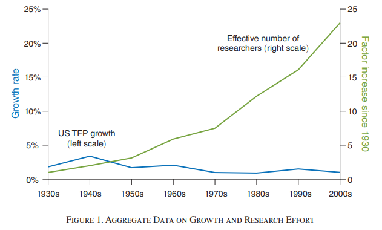
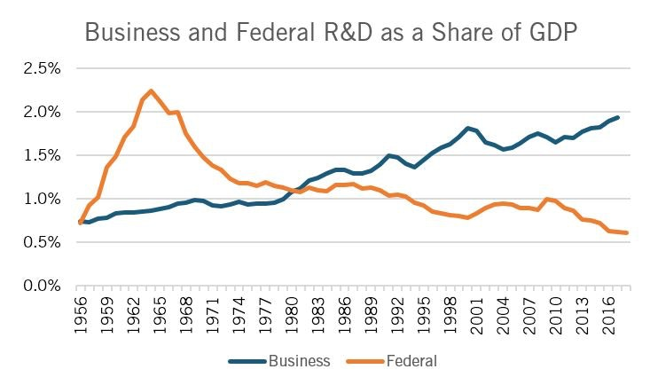

14 Science
14.1 Science Slowdown
Noah Smith
Low-hanging fruit and the rising cost of science
The basic idea of science stagnation is that the easiest discoveries happen first. 150 years ago, a monk sitting around playing with plants was able to discover some of the most fundamental properties of inheritance; now, biology labs are gigantic and hugely expensive marvels of technological complexity, and the NIH spends tens of billions of dollars every year. 400 years ago we had people rolling balls down ramps to study gravity; now we study gravity with billion-dollar gravitational wave detectors that require the efforts of thousands of highly trained scientists. And so on.
In 2020, four economists — Nicholas Bloom, Charles I. Jones, John Van Reenen, and Michael Webb — published a paper quantifying this principle, and the results are deeply disturbing. Across a wide variety of fields, they found that the cost of progress has been rising steadily; more and more researchers (or “effective researchers”) are required for each incremental advance. This is exactly what a “low-hanging-fruit” model of science would predict.

The idea of increasingly expensive research, unlike the other stagnationist arguments I addressed in earlier posts, is very hard to rebut — the theory is simple and powerful and the data is comprehensive and clear. But there are a few caveats to note here.
Important discoveries become more important as they age. Quantum mechanics was certainly cool stuff back in the 1920s, but it wasn’t until later that things like quantum field theory built on it, or engineering applications were developed that made use of it.
Science is progressive like that; each discovery is supported by the discoveries that came before it (in Newton’s words, it “stands on the shoulders of giants”). Thus, each new discovery makes the older discoveries that support it that much more important.
The upshot here is that even if science is getting more expensive, we can still afford to spend more resources and sustain it for a while.
Jones and Summers make a simple model of the economy in which R&D spending drives growth, plug recent numbers for our real economy into that model, and then ask how much it would reduce growth if we were to stop spending on R&D. The answer is: A lot.
R&D is a reliable money-printing machine: you put in a dollar, and you get back out much more than a dollar.
Clancy links us to a bit of evidence that R&D spending still drives progress forward, explaining the results of several papers that find that government research grants to small businesses were very effective at creating patentable inventions in both the U.S. and the EU.

Business is running fast enough to stay in place in terms of R&D, but the government isn’t even doing that much.
The upshot of all this is that while the increasing cost of science is a real and significant concern, it doesn’t mean it’s all stagnation from here on out. We still probably have enough money to accelerate technological progress once again, if we’re willing to spend it.